概观
在这一章中，你将学习如何处理真正的顺序数据。您将扩展您对用于训练序列数据的人工神经网络 ( 安)模型和递归神经网络 ( RNN )架构的了解。您还将学习如何为自然语言处理构建一个带有LSTM图层的RNN模型。
本章结束时，您将获得应用多个LSTM层来构建用于股票价格预测的rnn的实践经验。
简介
顺序数据是指每个数据点都依赖于前一个数据点的数据集。把它想象成一个句子，由一系列相互关联的单词组成。一个动词将与一个主语相联系，一个副词将与一个动词相联系。另一个例子是股票价格，某一天的价格与前几天的价格相关。传统的神经网络不适合处理这类数据。有一种特定类型的架构可以接收数据序列。本章将向你介绍这样的模型——被称为递归神经网络 ( RNNs )。
RNN模型是一种特定类型的深度学习架构，其中模型的输出反馈到输入中。这种类型的模型有它们自己的挑战(称为消失和爆炸渐变),将在本章后面讨论。
在许多方面，RNN是大脑如何工作的代表。rnn使用记忆来帮助他们学习。但是，如果信息只单向流动，他们如何做到这一点呢？为了理解这一点，你需要先回顾一下序列数据。这是一种需要工作内存来有效处理数据的数据。到目前为止，您只探索了非顺序模型，如感知器或CNN。在这一章中，你将会看到像RNN、LSTM或GRU这样的序列模型
图9.1:顺序与非顺序模型
顺序数据
顺序数据是按顺序发生的信息，与过去和未来的数据相关。时序数据的一个例子是时间序列数据；正如你所感知的，时间只朝一个方向行进。
假设你有一个球(如图图9.2 )，你想预测这个球下一步会去哪里。如果你事先不知道球的投掷方向，你只能猜测。然而，如果除了球的当前位置之外，你还知道它以前的位置，问题就简单多了。为了能够预测球的下一个位置，您需要顺序(或有序)形式的先前位置信息来预测未来事件。
图9.2:球的方向
RNNs的工作方式允许信息序列在内存的帮助下保留值。
在下一节中，您将看到一些顺序数据的例子。
顺序数据的例子
顺序数据是一种特定类型的数据，其中每条信息的顺序都很重要，并且它们都相互依赖。
顺序数据的一个例子是金融数据，如股票价格。如果您想要预测给定股票的未来数据值，您需要使用以前的时间值。事实上，您将在练习9.01 、中进行股票预测，为序列数据训练一个人工神经网络——Nvidia股票预测。
音频和文本也可以被认为是顺序数据。音频可以分解成一系列声波，文本可以分解成一系列字符或单词。应该对声波或字符或单词序列进行处理，以传达想要的结果。除了这两个你每天都会遇到的例子之外，还有更多顺序处理可能有用的例子，从分析EEG等医学信号，预测股票价格，以及推断和理解基因组序列。有三类顺序数据:
- 多对一从多个输入产生一个输出。
- 一对多从一个输入产生多个输出。
- 多对多从多个输入产生多个输出。
图9.3:顺序数据的类别
考虑另一个例子。假设您有一个包含一个句子或短语的语言模型，并且您正在尝试预测下一个单词，如下图所示:
图9.4:句子示例
假设给你单词yesterday I took my car out for a…，你想试着预测下一个单词drive。一种方法是建立深度神经网络，如前馈神经网络。然而，你会立即遇到一个问题。前馈网络只能将固定长度的输入向量作为其输入；您必须从一开始就指定输入的大小。
因此，您的模型需要一种能够处理可变长度输入的方法。一种方法是使用固定窗口。这意味着你强制输入向量只有一定的长度。例如，你可以把句子分成由两个连续单词组成的组(也称为双字组，并预测下一个单词。这意味着无论你想在哪里做下一个预测，你的模型都只会接受前两个词作为输入。您需要考虑如何用数字表示这些数据。一种方法是取一个固定长度的向量，在向量中为第一个单词分配一些空间，为第二个单词分配一些空间。在这些空格中，对每个单词的身份进行编码。然而，这是有问题的。
为什么？因为您只使用了可用信息的一部分(也就是说，只有两个连续的单词)。你只能访问有限的数据窗口，这些数据无法给出足够的上下文来准确预测下一个单词是什么。这意味着您无法有效地对长期依赖关系建模。这在像图9.5 中这样的句子中很重要，你显然需要句子中更早的信息来准确预测下一个单词。

图9.5:句子示例
如果你只看过去的两三个单词，你就无法做出下一个预测，你知道这就是Italian。所以，这意味着你真的需要一种方法来从头到尾整合句子中的信息。
为此，您可以使用一组计数作为固定长度的向量，并使用整个句子。这种方法被称为袋字。
不管句子的身份是什么，你都有一个固定长度的向量，但是不同的是增加了这个词汇表的计数。您可以将此输入到您的模型中，作为生成预测的输入。
然而，这还有另一个大问题。仅使用计数意味着您会丢失所有顺序信息和所有关于先前历史的信息。
考虑图9.6 。所以，这两个语义完全相反的句子，在这个单词包格式中会有完全相同的表达。这是因为它们有完全相同的单词列表，只是顺序不同。所以，很明显，这是行不通的。另一个想法可能是简单地扩展固定窗口。
图9.6:单词袋示例
现在，考虑图9.7 。你可以用这种方式表达你的句子，将句子输入到你的模型中，并生成你的预测。问题是，如果你将这个向量输入到一个前馈神经网络中，这些输入中的每一个，yesterday I took my car，都将有一个单独的权重将其连接到网络。因此，如果你在句子的开头反复看到单词yesterday，网络可能会知道yesterday代表一个时间或一个场景。然而，如果yesterday突然出现在固定长度向量的后面，在句子的末尾，网络可能很难理解yesterday的意思。这是因为在向量末尾的参数可能以前从未见过术语yesterday，并且从句子开始的参数没有在整个序列中共享。
图9.7:句子示例
因此，您需要能够处理可变长度的输入和长期依赖性，跟踪序列顺序，并拥有可以在整个序列中共享的参数。具体来说，您需要开发能够完成以下任务的模型:
- 处理可变长度的输入序列。
- 跟踪数据中的长期相关性。
- 维护有关序列顺序的信息。
- 在整个序列中共享参数。
对于一个信息只单向流动的模型，你如何做到这一点呢？你需要一种不同的神经网络。你需要一个递归模型。在下面的练习中，您将练习处理顺序数据。
练习9.01:为序列数据训练人工神经网络Nvidia股票预测
在本练习中，您将构建一个简单的ANN模型来预测Nvidia股票价格。但是与前几章的例子不同，这次输入数据是连续的。因此，您需要手动进行一些处理来创建一个数据集，该数据集将包含给定一天的股票价格作为目标变量，以及前60天的价格作为特征。您需要在日期2019-01-01前后将数据分为训练集和测试集。
注意
你可以在这里找到NVDA.csv数据集:https://packt.link/Mxi80。
- 打开新的Jupyter或Colab笔记本。
- 导入所需的库。使用
numpy进行计算，matplotlib绘制可视化，pandas帮助处理数据集，MinMaxScaler在零和一之间缩放数据集:import numpy as np import matplotlib.pyplot as plt import pandas as pd from sklearn.preprocessing import StandardScaler, MinMaxScaler
- 使用
read_csv()函数读入CSV文件，并将数据集存储在pandas数据帧data中，以进行操作:import io data = pd.read_csv('NVDA.csv') - Call the
head()function on your data to take a look at the first five rows of your DataFrame:data.head()
您应该得到以下输出:
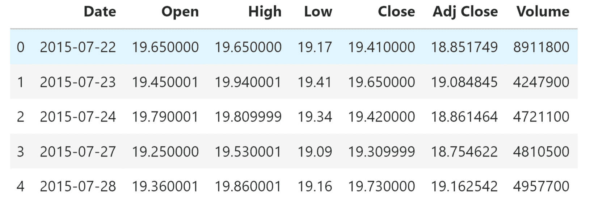图9.8:输出的前五行
上表显示了原始数据。您可以看到每一行都代表一天，在这一天中，您有关于股票开市和收盘时的价格、最高价格、最低价格和调整后的收盘价的信息(例如，考虑股息或股票分割)。
- 现在，分割训练数据。使用比
2019-01-01早的所有数据，使用Date列作为您的训练数据。另存为data_training。使用copy()方法:data_training = data[data['Date']<'2019-01-01'].copy()
将其保存在一个单独的文件中 - 现在，拆分测试数据。使用比使用
Date列的2019-01-01更新的所有数据。另存为data_test。使用copy()方法:data_test = data[data['Date']>='2019-01-01'].copy()
将其保存在一个单独的文件中 - Use
drop()to remove yourDateandAdj Closecolumns in your DataFrame. Remember that you used theDatecolumn to split your training and test sets, so the date information is not needed. Useaxis = 1to specify that you also want to drop labels from your columns. To make sure it worked, call thehead()function to take a look at the first five rows of the DataFrame:training_data = data_training.drop\ (['Date', 'Adj Close'], axis = 1) training_data.head()您应该得到以下输出:
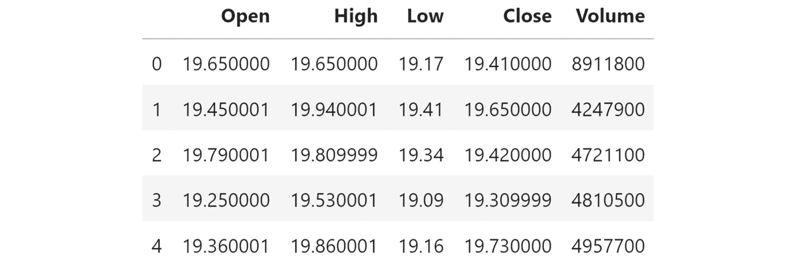图9.9:新的训练数据
这是删除这两列后应该得到的输出。
- Create a scaler from
MinMaxScalerto scaletraining_datato numbers between zero and one. Use thefit_transformfunction to fit the model to the data and then transform the data according to the fitted model:scaler = MinMaxScaler() training_data = scaler.fit_transform(training_data) training_data
您应该得到以下输出:

图9.10:缩放的训练数据
- 将您的数据分成
X_train和y_train数据集:X_train = [] y_train = []
- Check the shape of
training_data:training_data.shape[0]
您应该得到以下输出:
868
您可以看到在训练集中有868个观察值。
- 创建一个包含前60天股票价格的训练数据集，以便可以预测第61天的收盘价。在这里，
X_train将有两列。第一列将存储从0到59的值，第二列将存储从1到60的值。在y_train的第一列中，在索引60处存储第61个值，在第二列中，在索引61处存储第62个值。使用for循环在60个时间步长内创建数据:for i in range(60, training_data.shape[0]): X_train.append(training_data[i-60:i]) y_train.append(training_data[i, 0])
- 将
X_train和y_train转换成NumPy数组:X_train, y_train = np.array(X_train), np.array(y_train)
- Call the
shape()function onX_trainandy_train:X_train.shape, y_train.shape
您应该得到以下输出:
((808, 60, 5), (808,))
前面的代码片段显示，准备好的训练集包含您保留的五个特征(
Open、Low、High、Close和Volume)的808观察和60天的数据。 - Transform the data into a 2D matrix with the shape of the sample (the number of samples and the number of features in each sample). Stack the features for all 60 days on top of each other to get an output size of
(808, 300). Use the following code for this purpose:X_old_shape = X_train.shape X_train = X_train.reshape(X_old_shape[0], \ X_old_shape[1]*X_old_shape[2]) X_train.shape您应该得到以下输出:
(808, 300)
- 现在，建立一个人工神经网络。为此，您将需要一些额外的库。使用
Sequential初始化神经网络，Input添加输入层，Dense添加密集层，Dropout帮助防止过拟合:from tensorflow.keras import Sequential from tensorflow.keras.layers import Input, Dense, Dropout
- 通过调用
regressor_ann = Sequential()初始化神经网络。regressor_ann = Sequential() - 添加一个
shape为300:regressor_ann.add(Input(shape = (300,)))
的输入图层 - 然后，添加第一个密集层。将其设置为
512单位，这将是输出空间的维度。使用ReLU激活功能。最后，添加一个删除层，在训练过程中删除20%的单元，以防止过度拟合:regressor_ann.add(Dense(units = 512, activation = 'relu')) regressor_ann.add(Dropout(0.2))
- 添加另一个有
128个单位的密集层，ReLU为激活函数，dropout为0.3:regressor_ann.add(Dense(units = 128, activation = 'relu')) regressor_ann.add(Dropout(0.3))
- 添加另一个单位为
64的密集层，ReLU为激活函数，一个0.4:regressor_ann.add(Dense(units = 64, activation = 'relu')) regressor_ann.add(Dropout(0.4))
的漏点 - 再次，添加另一个具有
128单位的密集层，ReLU作为激活函数，以及0.3:regressor_ann.add(Dense(units = 16, activation = 'relu')) regressor_ann.add(Dropout(0.5))
的删除 - 添加一个单位的最终致密层:
regressor_ann.add(Dense(units = 1))
- Check the summary of the model:
regressor_ann.summary()
您将获得关于模型层和参数的有价值的信息。
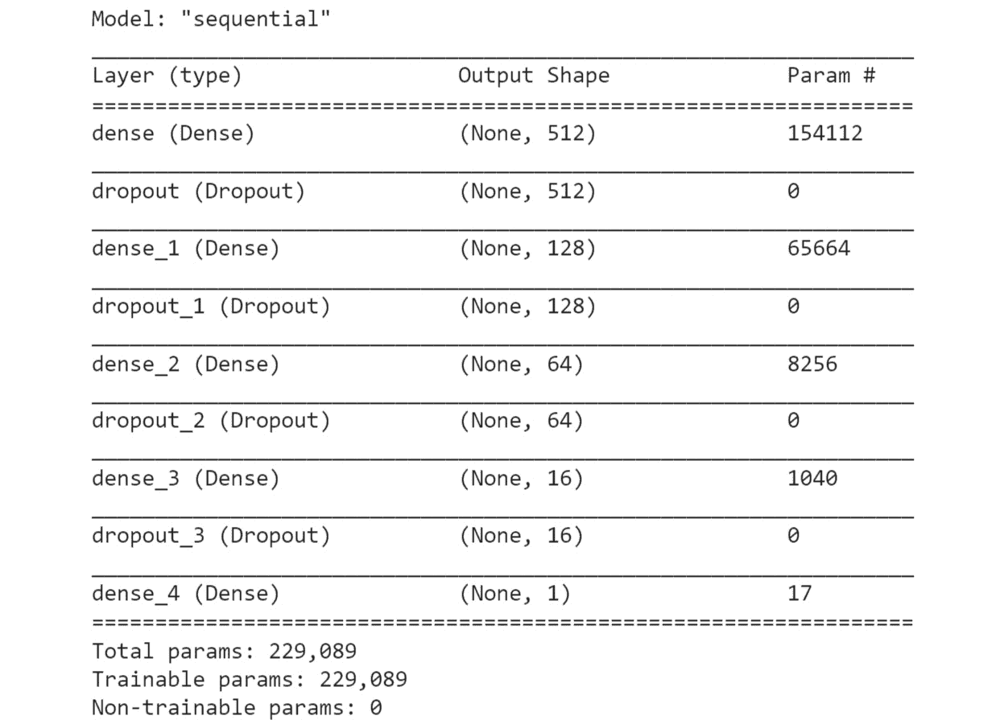图9.11:模型摘要
- 使用
compile()方法配置您的模型进行训练。选择Adam作为您的优化器，并使用均方差来衡量您的损失函数:regressor_ann.compile(optimizer='adam', \ loss = 'mean_squared_error')
- Finally, fit your model and set it to run on
10epochs. Set your batch size to32:regressor_ann.fit(X_train, y_train, epochs=10, batch_size=32)
您应该得到以下输出:
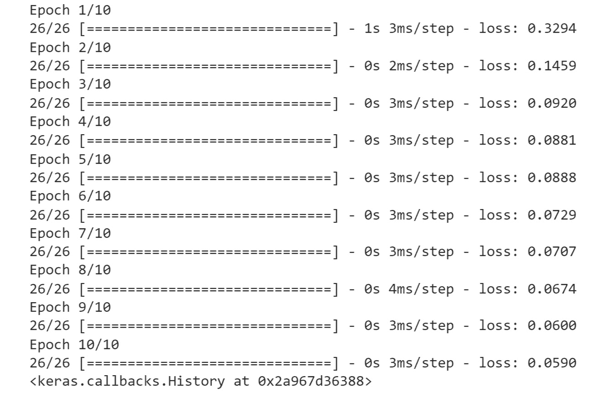图9.12:训练模型
- Test and predict the stock price and prepare the dataset. Check your data by calling the
head()method:data_test.head()
您应该得到以下输出:
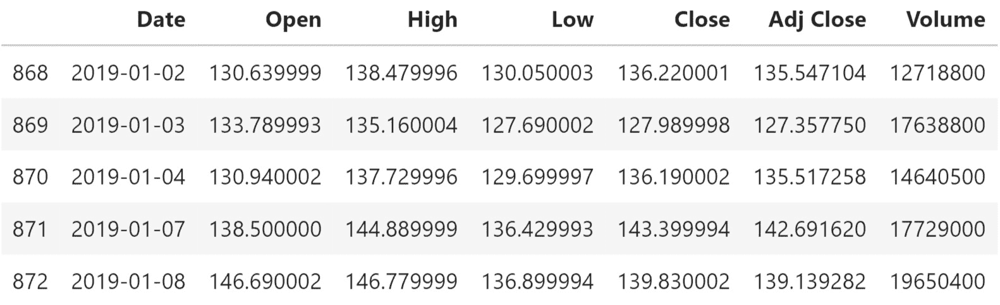图9.13:数据帧的前五行
- 使用
tail(60)方法创建一个past_60_days变量，它由训练集中最近60天的数据组成。用append()功能将past_60_days变量添加到测试数据中。将True分配给ignore_index:past_60_days = data_training.tail(60) df = past_60_days.append(data_test, ignore_index = True)
- Now, prepare your test data for predictions by repeating what you did for the training data in steps 8 to 15:
df = df.drop(['Date', 'Adj Close'], axis = 1) inputs = scaler.transform(df) X_test = [] y_test = [] for i in range(60, inputs.shape[0]): X_test.append(inputs[i-60:i]) y_test.append(inputs[i, 0]) X_test, y_test = np.array(X_test), np.array(y_test) X_old_shape = X_test.shape X_test = X_test.reshape(X_old_shape[0], \ X_old_shape[1] * X_old_shape[2]) X_test.shape, y_test.shape您应该得到以下输出:
((391, 300), (391,))
- 通过在
X_test:y_pred = regressor_ann.predict(X_test)
上调用predict()方法来测试对你的股票价格的一些预测 - Before looking at the results, reverse the scaling you did earlier so that the number you get as output will be at the correct scale using the
StandardScalerutility class that you imported withscaler.scale_:scaler.scale_
您应该得到以下输出:
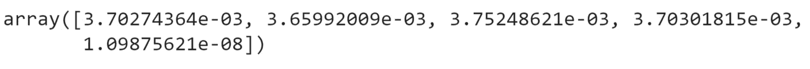图9.14:使用标准缩放器
- Use the first value in the preceding array to set your scale in preparation for the multiplication of
y_predandy_test. Recall that you are converting your data back from your earlier scale, in which you converted all values to between zero and one:scale = 1/3.70274364e-03 scale
您应该得到以下输出:
270.0700067909643
- 将
y_pred和y_test乘以scale，将您的数据转换回正确的值:y_pred = y_pred*scale y_test = y_test*scale
- Review the real Nvidia stock price and your predictions:
plt.figure(figsize=(14,5)) plt.plot(y_test, color = 'black', label = "Real NVDA Stock Price") plt.plot(y_pred, color = 'gray',\ label = 'Predicted NVDA Stock Price') plt.title('NVDA Stock Price Prediction') plt.xlabel('time') plt.ylabel('NVDA Stock Price') plt.legend() plt.show()您应该得到以下输出:
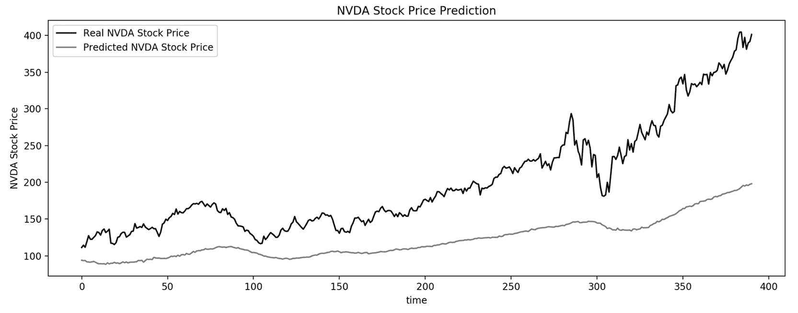
图9.15:真实的Nvidia股票价格与你的预测
在上图中，您可以看到您的训练模型能够捕捉到Nvidia股票价格的一些趋势。注意到预测值与实际值相差很大。从这个结果可以明显看出，人工神经网络不适用于序列数据。
在本练习中，您看到了简单人工神经网络无法处理序列数据。在下一节中，您将了解递归神经网络，它旨在从时序数据的时间维度中学习。然后，在练习9.02 、使用LSTM层Nvidia股票预测构建RNNs】中，您将使用RNNs对相同的Nvidia股票价格数据集执行预测，并比较您的结果。
递归神经网络
约翰·霍普菲尔德于1982年首次提出了类似递归的神经网络。他这样做有两个动机:
- 数据的顺序处理
- 神经元连通性建模
本质上，RNN在每个时间步处理输入数据，并将信息存储在其内存中，用于下一步。信息首先被转换成机器可以处理的向量。然后，RNN一次处理一个向量序列。当它处理每一个向量时，它通过前一个隐藏状态。隐藏状态保留上一步的信息，相当于一种记忆。它通过用压缩-1和1之间的值的双曲正切函数组合输入和先前的隐藏状态来实现这一点。
本质上，这就是RNN的功能。rnn不需要大量的计算，并且对于短序列工作得很好。
图9.16: RNN数据流
现在将注意力转向将神经网络应用于涉及数据顺序处理的问题。您已经了解了为什么这类任务需要与您目前所看到的完全不同类型的网络架构。
RNN建筑
本节将介绍RNNs背后的关键原理，它们与您目前所学的内容有何根本不同，以及RNN计算实际上是如何工作的。
但在此之前，请后退一步，考虑之前讨论过的标准前馈神经网络。
在前向神经网络中，数据只沿一个方向传播，即从输入到输出。
因此，您需要一种不同的网络架构来处理顺序数据。rnn特别适合处理有一系列输入而不是单个输入的情况。这对于传播一系列数据以给出单个输出的问题非常有用。
例如，假设您正在训练一个模型，该模型将一系列单词作为输入，并输出与该序列相关联的情感。类似地，考虑这样的情况，不是返回单个输出，而是有一个输入序列并通过网络传播它们，其中序列中的每个时间步长都生成一个输出。
简而言之，rnn是一种网络，它提供了一种机制来长期保存以前处理过的数据，并使用它来进行未来预测。
图9.17: RNN计算
在上图中，在由t表示的某个时间步长，RNN将X t作为输入，在该时间步长，它计算预测值Y t，这是网络的输出。
除了这个输出，它还保存了一个内部状态，称为更新，H t。这个来自时间步t的内部状态可以用来补充下一个时间步t+1的输入。所以，基本上，它提供了关于上一步到下一步的信息。这种机制被称为循环，因为信息在网络中从一个时间步传递到下一个时间步。
这里到底发生了什么？这是通过使用简单的递归关系来处理顺序数据来实现的。RNNs保持内部状态，H t，并将其与下一个输入数据，X t+1结合，进行预测，Y t+1，并存储新的内部状态，H t+1。关键思想是状态更新是先前状态时间步长以及网络正在接收的当前输入的组合。
值得注意的是，在这个计算中，在每个时间步使用的是W的相同函数f和相同的参数集，这些参数集是您在训练过程中学习到的。为了更好地理解这些网络是如何工作的，请浏览RNN算法:
- 首先初始化你的RNN和网络的隐藏状态。你可以指出一个你有兴趣预测下一个单词的句子。RNN计算简单地由他们循环通过这个句子中的单词组成。
- 在每一个时间步，你把你正在考虑的当前单词，以及你的RNN先前的隐藏状态输入到网络中。然后，这可以为序列中的下一个单词生成预测，并使用该信息来更新其隐藏状态。
- 最后，当你遍历完句子中的所有单词后，你对那个丢失单词的预测就是RNN在最后一个时间步的输出。
如下图所示，这种RNN计算包括内部状态更新和形式输出向量。
图9.18: RNN数据流
给定输入向量X t，RNN应用一个函数来更新它的隐藏状态。这个函数只是一个标准的神经网络操作。它包括乘以权重矩阵和应用非线性激活函数。关键的区别在于，在这种情况下，您将输入向量X t和之前的状态作为这个函数H t-1的输入。
接下来，将非线性激活函数(如tanh)应用于上一步。你有这两个权重矩阵，最后，你的输出，y t，在一个给定的时间步，是这个内部状态的一个修改的，转换的版本。
当你遍历完句子中的所有单词后，你对那个缺失单词的预测就是RNN在最后一个时间步的输出，在所有单词都被输入模型后。因此，如上所述，RNN计算包括内部状态更新和形式输出向量。
另一种表示rnn的方式是随时间展开它们的模块。你可以把rnn想象成同一个网络有多个副本，每个副本把一个消息传递给它的后代。
图9.19:随时间变化的计算图
在这个表示中，您可以使您的权重矩阵显式化，从将输入转换为用于将先前的隐藏状态转换为当前的隐藏状态的H权重开始，最后将隐藏状态转换为输出。
值得注意的是，你在每个时间步使用相同的权重矩阵。根据这些输出，您可以计算每个时间步的损失。损耗的计算将完成你在网络中的正向传播。最后，要定义总损失，只需将所有单个时间步骤的损失相加。由于你的损失取决于每个时间步，这意味着，在训练网络时，你也必须把时间作为一个组成部分。
现在，您已经对这些RNN的构造和功能有了一些了解，您可以通过一个简单的示例来了解如何在TensorFlow中从头开始实现RNN。
下面的片段使用了来自keras.models.Sequential的一个简单的RNN。您将单位数指定为1，并将第一个输入维度设置为None，因为RNN可以处理任意数量的时间步长。默认情况下，简单的RNN使用tanh激活:
model = keras.models.Sequential([
keras.layers.SimpleRNN\
(1, input_shape=[None, 1])
])
前面的代码创建了一个具有单个神经元的单层。
这很容易。现在你需要叠加一些额外的循环层。代码是相似的，但是这里有一个关键的区别。你会注意到除了最后一层以外的所有层上的return_sequences=True。这是为了确保输出是3D数组。如您所见，前两层各有20单元:
model = keras.models.Sequential\
([Keras.layers.SimpleRNN\
(20, return_sequences=True, input_shape=[None, 1]), \
Keras.layers.SimpleRNN(20, return_sequences=True), \
Keras.layers.SimpleRNN(1)])
RNN被定义为一个图层，您可以通过从图层类继承它来构建它。你也可以将你的权重矩阵和RNN单元格的隐藏状态初始化为零。
这里的关键步骤是定义调用函数，它描述了在给定输入X的情况下，如何通过网络进行前向传递。为了分解这个调用函数，首先要根据前面讨论的等式更新隐藏状态。
取之前的隐藏状态和输入X，乘以相关的权重矩阵，将它们加在一起，然后通过一个非线性，比如双曲正切(tanh)。
然后，输出只是隐藏状态的转换版本，在每个时间步，您都返回当前输出和更新的隐藏状态。
TensorFlow通过内置的密集层使其变得简单。这同样适用于注册护士。TensorFlow已经用简单的RNN层实现了这些类型的RNN单元。但这种类型的层有一些限制，如消失梯度。在探索不同类型的递归层之前，您将在下一节中研究这个问题。
消失渐变问题
如果你仔细观察梯度是如何在这个重复模块链中流动的，你会发现在每个时间步之间你需要执行矩阵乘法。这意味着梯度的计算——即损失对参数的导数，一直追溯到初始状态——需要多次重复乘以权重矩阵，以及重复使用激活函数的导数。
您可能会遇到两种特别成问题的情况:爆炸渐变问题或消失渐变问题。
爆炸梯度问题是当梯度由于矩阵乘法运算而不断变得越来越大时，你就不能再优化它们了。减轻这种情况的一种方法是执行所谓的渐变裁剪。这相当于缩小大梯度，使它们的值更小，更接近1。
你也可以有相反的问题，你的梯度太小。这就是所谓的消失梯度问题。这是当你进行这些重复的乘法时，梯度变得越来越小(接近于0，并且你不能再训练网络。这是一个非常现实的问题，当谈到培训RNNs。
例如，考虑这样一个场景，你一直将一个数乘以一个介于0和1之间的数。当你不断重复这个过程时，这个数字会不断缩小，直到最后消失，变成0。当梯度发生这种情况时，很难将错误进一步传播回过去，因为梯度变得越来越小。
考虑前面的语言模型中的例子，您试图预测下一个单词。如果你试图预测下面短语中的最后一个单词，那么下一个单词会是什么就相对清楚了。在关键的相关信息(比如“鱼”这个词)和需要预测的地方之间没有太大的差距。
图9.20:单词预测
然而，在其他情况下，需要更多的上下文，如下面的例子。来自句子早期的信息She lived in Spain表明she speaks fluent之后的句子的下一个单词最有可能是一种语言的名称Spanish。
图9.21:句子示例
但是你需要Spain的上下文，它在这个句子中位于更早的位置，能够填补相关的空白，识别哪种语言是正确的。随着语义上重要的单词之间的差距越来越大，rnn变得越来越无法将这些点连接起来，并将这些相关的信息链接在一起。这是由于消失梯度问题。
你如何缓解这种情况？第一个技巧很简单。您可以选择tanh或sigmoid作为激活函数。这两个函数的导数都小于1。
另一个简单的技巧是初始化网络参数的权重。事实证明，初始化单位矩阵的权重有助于防止它们在反向传播期间过快地收缩到零。
但是最后一个也是最可靠的解决方案是使用一个稍微复杂一点的递归单元，它可以更有效地跟踪数据中的长期依赖关系。它可以通过控制传递什么信息以及使用什么信息来更新其内部状态来做到这一点。具体来说，这是门控细胞的概念，就像在LSTM层，这是下一节的重点。
长短期记忆网络
LSTMs非常适合学习长期依赖性和克服消失梯度问题。它们是序列数据的高性能模型，被深度学习社区广泛使用。
LSTMs具有链状结构。在LSTM中，重复单元包含不同的相互作用层。关键是这些层相互作用，有选择地控制细胞内的信息流。
LSTM的关键构建模块是一种称为门的结构，其功能是使LSTM能够选择性地添加或删除其细胞状态的信息。门由一个类似s形的神经网络层组成。
图9.22: LSTM建筑
花一点时间想想这样的门在LSTM会有什么作用。在这种情况下，sigmoid函数会强制其输入在0和1之间。你可以把这种机制想象成捕捉有多少通过大门的信息应该被保留。它在零和一之间。这有效地控制了信息的流动。
LSTMs通过四个简单的步骤处理信息:
- LSTM的第一步是决定哪些信息将从细胞状态中丢弃，以忘记不相关的历史。这是先前内部状态
Ht-1和输入Xt的函数，因为其中一些信息可能不重要。 - 接下来，LSTM决定新信息的哪一部分是相关的，并使用它来将该信息存储在其单元状态中。
- 然后，它获取先验信息的相关部分以及当前输入，并使用这些信息来有选择地更新其单元状态。
- 最后，它返回一个输出，这就是所谓的输出门，它控制单元状态中编码的信息发送到网络。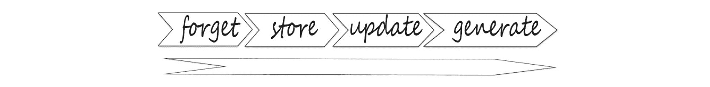
图9.23: LSTM处理步骤
对于LSTMs来说，这里的关键要点是它们如何调节信息流和存储的顺序。同样，LSTMs的操作如下:
- 忘记无关的历史
- 存储新内容和重要内容
- 使用其内部存储器来更新内部状态
- 生成输出
LSTMs的一个重要特性是，所有这些不同的门控和更新机制共同创建了一个内部单元状态C，它允许梯度随时间不间断地流动。你可以把它想象成细胞状态的高速公路，梯度可以不间断地流动。这使你能够缓解和减轻消失梯度的问题，这是标准的RNNs。
LSTMs能够独立于输出内容来维护这种独立的单元状态，并且它们通过忘记不相关的历史、存储相关的新信息、选择性地更新它们的单元状态，然后返回过滤版本作为输出，来使用门来控制信息流。
就训练和LSTM而言，关键点在于保持分离的独立单元状态允许LSTM随时间反向传播的有效训练，这将在后面讨论。
现在，您已经了解了RNNs的基本工作原理、时间反向传播算法以及LSTM架构的一些知识，您可以将其中的一些概念应用到下面的示例中。
考虑以下LSTM模型:
regressor = Sequential()
regressor.add(LSTM(units= 50, activation = 'relu', \
return_sequences = True, \
input_shape = (X_train.shape[1], 5)))
regressor.add(Dropout(0.2))
regressor.add(LSTM(units= 60, activation = 'relu', \
return_sequences = True))
regressor.add(Dropout(0.3))
regressor.add(LSTM(units= 80, activation = 'relu', \
return_sequences = True))
regressor.add(Dropout(0.4))
regressor.add(LSTM(units= 120, activation = 'relu'))
regressor.add(Dropout(0.5))
regressor.add(Dense(units = 1))
首先，您已经通过调用regressor = Sequential()初始化了一个神经网络。同样，需要注意的是，在最后一行中您省略了return_sequences = True,因为它是最终输出:
regressor = Sequential()
然后，LSTM层被添加。首先，设置LSTM层为50单位。使用relu激活函数并指定训练集的形状。最后在脱落层加上regressor.add(Dropout(0.2)。0.2意味着20%的图层将被移除。设置return_sequences = True，允许返回上一次输出。
同样，添加三个以上的LSTM层和一个密集层到LSTM模型。
现在，您已经熟悉了处理顺序数据的基本概念，是时候使用一些真实数据来完成下面的练习了。
练习9.02:使用LSTM图层构建RNN–Nvidia股票预测
在本练习中，您将使用与练习9.01 、为序列数据训练人工神经网络相同的数据集——Nvidia股票预测。你还是会尝试根据之前60天的数据来预测英伟达股价。但这次，你将训练一个LSTM模特。您需要在2019-01-01日期前后将数据分成训练集和测试集。
注意
你可以在这里找到NVDA.csv数据集:https://packt.link/Mxi80。
在应用以下代码之前，您需要像在练习9.01 、为序列数据训练ANN-Nvidia股票预测 ( 步骤1 到 15 )中一样准备数据集:
- 开始建造LSTM。为此，您将需要一些额外的库。使用
Sequential初始化神经网络，Dense添加密集层，LSTM添加LSTM层，Dropout帮助防止过度拟合:from tensorflow.keras import Sequential from tensorflow.keras.layers import Dense, LSTM, Dropout
- 通过调用
regressor = Sequential()初始化神经网络。添加四个LSTM层，每个层有50、60、80和120个单元。使用一个ReLU激活功能，将True分配给return_sequences，除了最后一个LSTM层。将训练集的形状提供给第一个LSTM图层。最后，添加20%、30%、40%和50%漏失的漏失层:regressor = Sequential() regressor.add(LSTM(units= 50, activation = 'relu',\ return_sequences = True,\ input_shape = (X_train.shape[1], 5))) regressor.add(Dropout(0.2)) regressor.add(LSTM(units= 60, activation = 'relu', \ return_sequences = True)) regressor.add(Dropout(0.3)) regressor.add(LSTM(units= 80, activation = 'relu', \ return_sequences = True)) regressor.add(Dropout(0.4)) regressor.add(LSTM(units= 120, activation = 'relu')) regressor.add(Dropout(0.5)) regressor.add(Dense(units = 1))
- Check the summary of the model using the
summary()method:regressor.summary()
您应该得到以下输出:
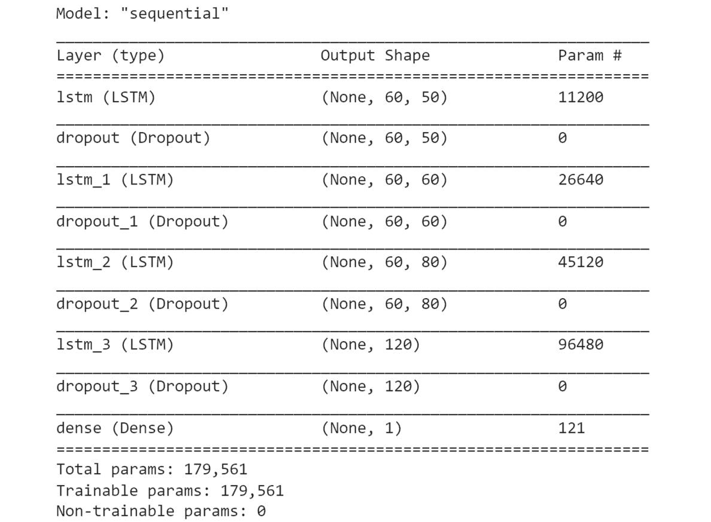图9.24:模型总结
从上图中可以看出，摘要提供了关于所有模型层和参数的有价值的信息。这是一种很好的方法，可以确保您的图层按照您希望的顺序排列，并且具有正确的输出形状和参数。
- 使用
compile()方法配置您的模型进行训练。选择Adam作为您的优化器，并使用均方差来衡量您的损失函数:regressor.compile(optimizer='adam', loss = 'mean_squared_error')
- Fit your model and set it to run on
10epochs. Set your batch size equal to32:regressor.fit(X_train, y_train, epochs=10, batch_size=32)
您应该得到以下输出:
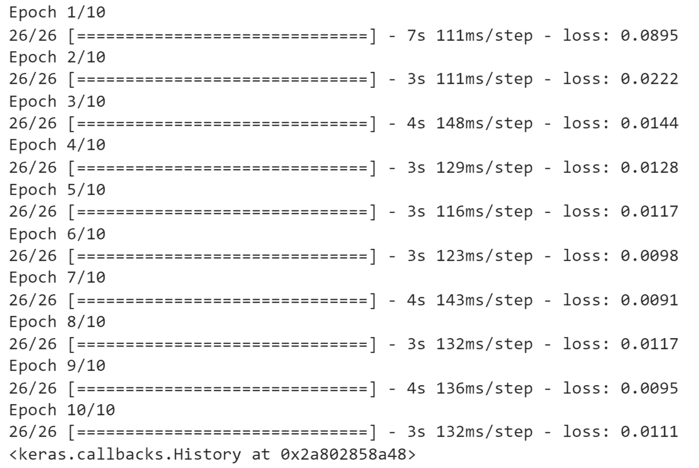图9.25:训练模型
- Test and predict the stock price and prepare the dataset. Check your data by calling the
head()function:data_test.head()
您应该得到以下输出:
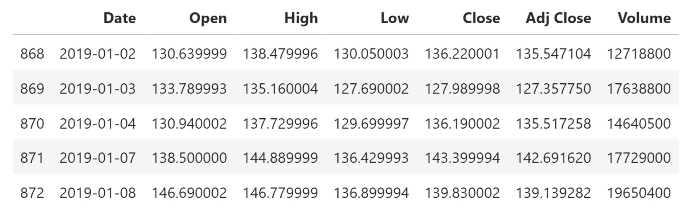图9.26:数据帧的前五行
- Call the
tail(60)method to look at the last 60 days of data. You will use this information in the next step:data_training.tail(60)
您应该得到以下输出:
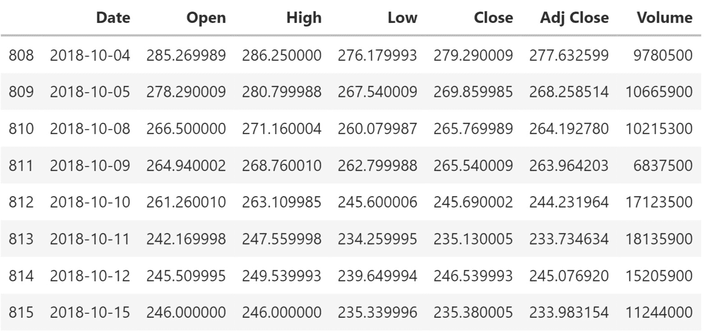图9.27:数据帧的最后10行
- 使用
tail(60)方法创建past_60_days变量:past_60_days = data_training.tail(60)
- 使用
append()功能将past_60_days变量添加到您的测试数据中。将True设置为ignore_index。删除Date和Adj Close列，因为您不需要这些信息:df = past_60_days.append(data_test, ignore_index = True) df = df.drop(['Date', 'Adj Close'], axis = 1)
- Check the DataFrame to make sure that you successfully dropped
DateandAdj Closeby using thehead()function:df.head()
您应该得到以下输出:
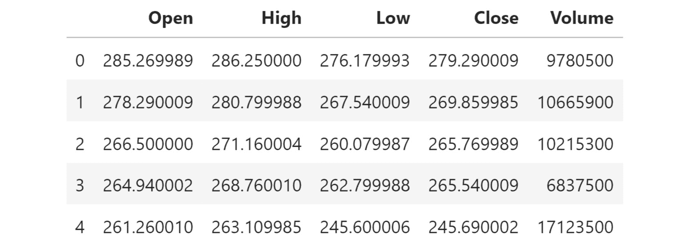图9.28:检查数据帧的前五行
- Use
scaler.transformfromStandardScalerto perform standardization on inputs:inputs = scaler.transform(df) inputs
您应该得到以下输出:
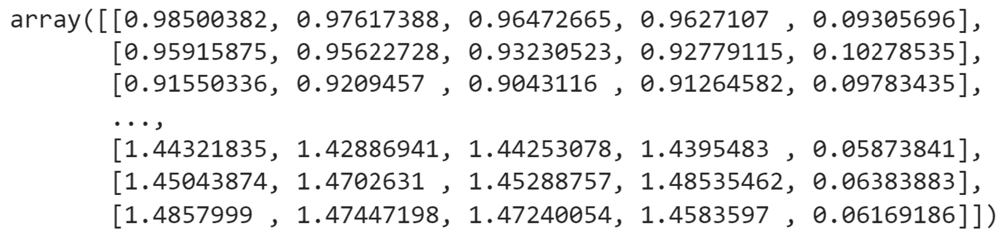图9.29:数据帧标准化
从前面的结果可以看出，标准化后，现在所有值都接近
0。 - 将您的数据分成
X_test和y_test数据集。创建一个包含前60天股票价格的测试数据集，以便可以测试第61天的收盘价。在这里，X_test将有两列。第一列将存储从0到59的值。第二列将存储从1到60的值。在y_test的第一列中，在索引60处存储第61个值，在第二列中，在索引61处存储第62个值。使用for循环在60个时间步长内创建数据:X_test = [] y_test = [] for i in range(60, inputs.shape[0]): X_test.append(inputs[i-60:i]) y_test.append(inputs[i, 0])
- Convert
X_testandy_testinto NumPy arrays:X_test, y_test = np.array(X_test), np.array(y_test) X_test.shape, y_test.shape
您应该得到以下输出:
((391, 60, 5), (391,))
前面的结果显示有
391个观察值，每个观察值都有最近60天以下五个特征的数据:Open、High、Low、Close和Volume。另一方面，目标变量包含391值。 - 通过调用
regressor.predict(X_test):y_pred = regressor.predict(X_test)
来测试一些股票价格的预测 - Before looking at the results, reverse the scaling you did earlier so that the number you get as output will be at the correct scale using the
StandardScalerutility class that you imported withscaler.scale_:scaler.scale_
您应该得到以下输出:
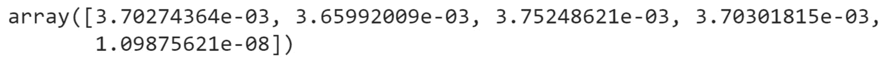图9.30:使用标准缩放器
- Use the first value in the preceding array to set your scale in preparation for the multiplication of
y_predandy_test. Recall that you are converting your data back from the scale you did earlier when converting all values to between zero and one:scale = 1/3.70274364e-03 scale
您应该得到以下输出:
270.0700067909643
- 将
y_pred和y_test乘以scale，将您的数据转换回正确的值:y_pred = y_pred*scale y_test = y_test*scale
- Use
y_predto view predictions for NVIDIA stock:y_pred
您应该得到以下输出:
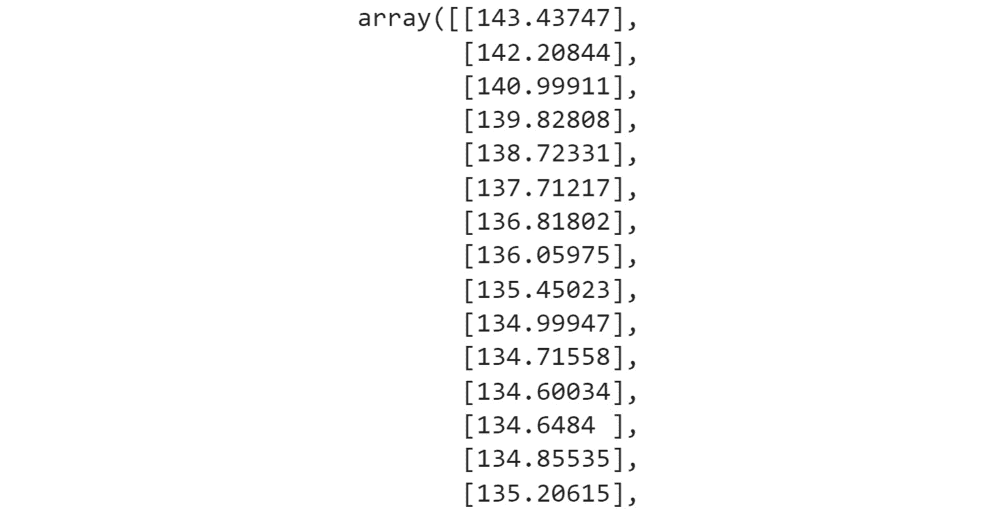图9.31:检查预测
上述结果显示了未来几天Nvidia股票的预测价格。
- Plot the real Nvidia stock price and your predictions:
plt.figure(figsize=(14,5)) plt.plot(y_test, color = 'black', label = "Real NVDA Stock Price") plt.plot(y_pred, color = 'gray',\ label = 'Predicted NVDA Stock Price') plt.title('NVDA Stock Price Prediction') plt.xlabel('time') plt.ylabel('NVDA Stock Price') plt.legend() plt.show()您应该得到以下输出:
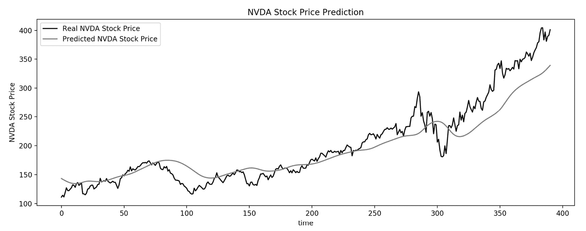
图9.32:英伟达股价可视化
从图9.32 中的灰色线可以看出，与黑线显示的实际股价相比，您的预测模型相当准确。
在本练习中，您为Nvidia股票预测构建了一个具有LSTM图层的RNN，并完成了训练、测试和预测步骤。
现在，在下面的活动中测试你在本章中学到的知识。
活动9.01:使用多个LSTM图层构建一个RNN来预测功耗
household_power_consumption.csv数据集包含与一个家庭4年来的电力消耗测量相关的信息，采样率为1分钟。您需要根据之前的测量结果预测给定时间内的功耗。
您的任务是调整具有额外LSTM图层的RNN模型，以预测分钟级别的家庭功耗。你将建立一个有三个LSTM层的RNN模型。
注意
你可以在这里找到数据集:https://packt.link/qrloK。
执行以下步骤来完成本练习:
- 加载数据。
- 通过将
Date和Time列组合成一个单独的Datetime列来准备数据，然后可以使用该列对数据进行排序并填充缺失值。 - 标准化数据，删除
Date、Time、Global_reactive_power和Datetime列，因为预测不再需要它们。 - 重塑给定分钟的数据，以包含前60分钟的值。
- 将数据分为训练集和测试集，分别包含索引
217440之前和之后的数据，索引217440对应于上个月的数据。 - 定义并训练一个RNN模型，该模型由三个不同层的LSTM组成，具有
20、40和80个单元，后面是50%dropout和ReLU作为激活函数。 - 使用训练好的模型对测试集进行预测。
- Compare the predictions against the actual values on the entire dataset.
您应该得到以下输出:
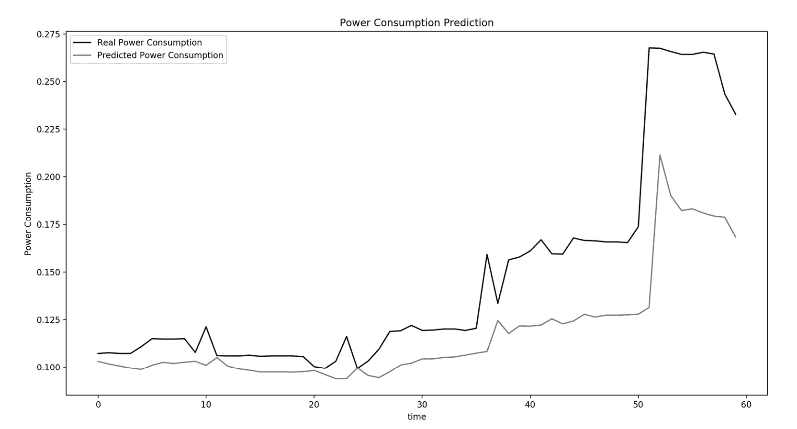
图9.33:活动9.01的预期产出
注意
此活动的解决方案可通过此链接找到。
在下一节中，您将学习如何将RNNs应用于文本。
自然语言处理
自然语言处理是一个快速发展的领域，既有挑战性又有回报。NLP获取传统上机器很难理解的有价值的数据，并将其转化为可以使用的信息。这些数据可以采取句子、单词、字符、文本和音频等形式。为什么这对机器来说是如此困难的任务？要回答这个问题，请考虑下面的例子。
回想一下这两句话:是什么就是什么和是什么就是什么。这两个句子，虽然它们有完全相反的语义，但在这个单词包格式中会有完全相同的表示。这是因为它们有完全相同的单词，只是顺序不同。所以，你知道你需要使用一个序列模型来处理这个，但是还有什么呢？已经开发了几种工具和技术来解决这些问题。但是在这之前，您需要学习如何预处理顺序数据。
数据预处理
快速回顾一下，预处理通常包括训练模型所需的所有步骤。一些常见的步骤包括数据清理、数据转换和数据简化。更具体地说，对于自然语言处理，这些步骤可以是以下的全部、一些或没有:
- 标记化
- 填料
- 小写转换
- 删除停用词
- 删除标点符号
- 堵塞物
以下部分对您将使用的步骤进行了更深入的描述。现在，这里是每个步骤的概述:
- 数据集清理包括大小写转换、删除标点符号等等。
- 记号化是将一个字符序列分解成称为记号的特定单元。
- 填充是一种通过填充使不同大小的输入句子相同的方法。填充序列意味着确保序列具有一致的长度。
- 词干化是将单词截断到词干。例如，单词“rainy”和“raining”都有词干“rain”。
数据集清洗
在这里，您创建了clean_text函数，它返回一个包含单词的列表，这些单词已经被清理过了。您将使用lower()将所有文本保存为小写，并使用utf8对其进行编码以实现字符标准化:
def clean_text(txt):
txt = "".join(v for v in txt if v not in string.punctuation)\
.lower()
txt = txt.encode("utf8").decode("ascii",'ignore')
return txt
corpus = [clean_text(x) for x in all_headlines]
生成序列和标记化
TensorFlow提供了一个专门的类，用于生成一系列N元符号——来自keras.preprocessing.text的Tokenizer:
from keras.preprocessing.text import Tokenizer tokenizer = Tokenizer()
一旦实例化了一个Tokenizer()，就可以使用fit_on_texts()方法从语料库中提取标记。该步骤将为语料库中的每个唯一单词分配一个整数索引:
tokenizer.fit_on_texts(corpus)
在语料库上训练完分词器之后，您可以使用word_index属性访问语料库中分配给每个单词的索引:
tokenizer.word_index
您可以使用texts_to_sequences()方法将句子转换成标记化版本:
tokenizer.texts_to_sequences([sentence])
您可以创建一个函数，使用下面的代码片段从输入语料库中生成N元语法的标记化句子序列:
def get_seq_of_tokens(corpus):
tokenizer.fit_on_texts(corpus)
all_words = len(tokenizer.word_index) + 1
input_sequences = []
for line in corpus:
token_list = tokenizer.texts_to_sequences([line])[0]
for i in range(1, len(token_list)):
n_gram_sequence = token_list[:i+1]
input_sequences.append(n_gram_sequence)
return input_sequences, all_words
inp_sequences, all_words = get_seq_of_tokens(corpus)
inp_sequences[:10]
get_seq_of_tokens()函数在给定的语料库上训练一个Tokenizer()。然后，您需要遍历语料库的每一行，并将它们转换成标记化的对等词。最后，对于每一个标记化的句子，您可以从中创建不同的N元语法序列。
接下来，您将看到如何使用填充来处理可变的句子长度。
填充序列
如前所述，深度学习模型期望固定长度的输入。但是对于文本，句子的长度可以变化。克服这个问题的一个方法是将所有的句子转换成相同的长度。你需要设置句子的最大长度。然后，对于比这个阈值短的句子，可以添加填充，它会添加一个特定的令牌值来填充空白。另一方面，较长的句子将被截断以适应这种约束。您可以使用pad_sequences()来实现这一点:
from keras.preprocessing.sequence import pad_sequences
您可以创建generate_padded_sequences函数，它将接受input_sequences并生成其填充版本:
def generate_padded_sequences(input_sequences):
max_sequence_len = max([len(x) for x in input_sequences])
input_sequences = np.array(pad_sequences\
(input_sequences, \
maxlen=max_sequence_len, \
padding='pre'))
predictors, label = input_sequences[:,:-1], \
input_sequences[:,-1]
label = ku.to_categorical(label, num_classes=all_words)
return predictors, label, max_sequence_len
predictors, label, max_sequence_len = generate_padded_sequences\
(inp_sequences)
既然您已经知道如何处理原始文本，那么请看下一节中的建模步骤。
穿越时间的反向传播(BPTT)
序列模型有很多种。您已经使用了简单rnn、深度rnn和LSTMs。让我们来看几个用于NLP的附加模型。
请记住，您首先通过从输入到输出的网络进行正向传递来训练前馈模型。这是标准的前馈模型，其中各层紧密相连。为了训练这种模型，可以通过网络反向传播梯度，对网络中每个权重参数的损失进行求导。然后，可以调整参数，将损失降到最低。
但是在RNNs中，如前所述，通过网络的前向传递还包括及时前进，根据输入和先前状态更新单元状态，并生成输出Y。在该时间步，计算损失，最后将各个时间步的损失相加，得到总损失。
这意味着，误差不是在单个时间步长通过单个前馈网络反向传播，而是在每个单独的时间步长反向传播，最后跨越所有时间步长，从当前位置一直到序列的开头。
这就是为什么它被称为穿越时间的反向传播。正如你所看到的，所有的错误都及时流回到数据序列的开始。
Google Translate是机器翻译的一个很好的例子，也是RNNs在行业中最强大和最广泛使用的应用之一。在机器翻译中，你用一种语言输入一个序列，任务是训练RNN用一种新的语言输出这个序列。这是通过采用具有编码器和解码器的双重结构来实现的，编码器将句子以其原始语言编码成状态向量。然后，它将该编码表示作为输入，并将其解码成一种新的语言。
但是这种方法有一个关键问题:所有输入编码器结构的内容都必须编码成一个向量。这在实践中会成为一个巨大的信息瓶颈，因为您可能有大量的文本需要翻译。为了解决这个问题，谷歌的研究人员开发了一种RNN的扩展，叫做注意力T2。
现在，解码器不是只能访问最终的编码状态，而是可以访问原始句子中所有时间步长的状态。将编码器状态连接到解码器的这些向量的权重由网络在训练期间学习。这被称为注意力，因为当网络学习时，它将注意力放在输入句子的不同部分。
通过这种方式，它有效地捕捉到了对原始句子中重要信息的一种记忆访问。因此，近年来，随着注意力和门控细胞(如LSTMs)等构建模块的出现，rnn已经真正起飞，并在现实世界中得到相当成功的应用。
到目前为止，您应该已经对rnn的工作原理以及它们在处理顺序数据时为何如此强大有了一些了解。您已经看到了为什么以及如何使用RNNs通过定义这个递归关系来执行序列建模任务。您还了解了如何训练rnn，并了解了LSTMs等门控细胞如何帮助我们建立长期依赖性模型。
在下面的练习中，您将看到如何使用LSTM模型来预测文本中的下一个单词。
练习9.03:使用LSTM图层构建一个用于自然语言处理的RNN
在本练习中，您将使用带有LSTM图层的RNN来预测新闻标题的最后一个单词。
Articles.csv数据集包含由新闻标题组成的原始文本。你将训练一个LTSM模型，它将预测给定句子的下一个单词。
注意
你可以在这里找到数据集:【https://packt.link/RQVoB】T4。
执行以下步骤来完成本练习:
- Import the libraries needed:
from keras.preprocessing.sequence import pad_sequences from keras.layers import Embedding, LSTM, Dense, Dropout from keras.preprocessing.text import Tokenizer from keras.callbacks import EarlyStopping from keras.models import Sequential import keras.utils as ku import pandas as pd import numpy as np import string, os import warnings warnings.filterwarnings("ignore") warnings.simplefilter(action='ignore', category=FutureWarning)您应该得到以下输出:
Using TensorFlow backend.
- Load the dataset locally by setting
curr_dirtocontent. Create theall_headlinesvariable. Use aforloop to iterate over the files contained in the folder, and extract the headlines. Remove all headlines with theUnknownvalue. Print the length ofall_headlines:curr_dir = '/content/' all_headlines = [] for filename in os.listdir(curr_dir): if 'Articles' in filename: article_df = pd.read_csv(curr_dir + filename) all_headlines.extend(list(article_df.headline.values)) break all_headlines = [h for h in all_headlines if h != "Unknown"] len(all_headlines)输出如下所示:
831
- Create the
clean_textmethod to return a list containing words once it has been cleaned. Save all text as lowercase with thelower()method and encode it withutf8for character standardization. Finally, output 10 headlines from your corpus:def clean_text(txt): txt = "".join(v for v in txt \ if v not in string.punctuation).lower() txt = txt.encode("utf8").decode("ascii",'ignore') return txt corpus = [clean_text(x) for x in all_headlines] corpus[:10]您应该得到以下输出:
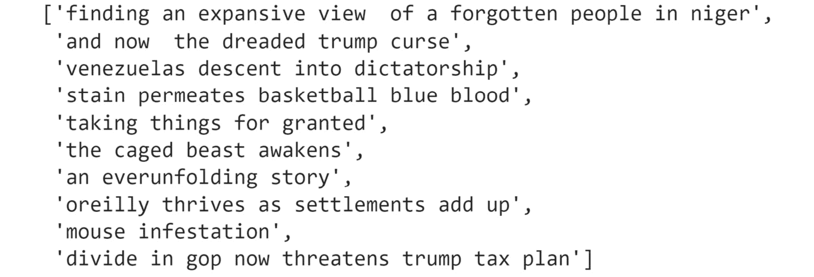图9.34:语料库
- Use
tokenizer.fitto extract tokens from the corpus. Each integer output corresponds with a specific word. Withinput_sequences, train features that will be alist []. Withtoken_list = tokenizer.texts_to_sequences, convert each sentence into its tokenized equivalent. Withn_gram_sequence = token_list, generate the N-gram sequences. Usinginput_sequences.append(n_gram_sequence), append each N-gram sequence to the list of your features:tokenizer = Tokenizer() def get_seq_of_tokens(corpus): tokenizer.fit_on_texts(corpus) all_words = len(tokenizer.word_index) + 1 input_sequences = [] for line in corpus: token_list = tokenizer.texts_to_sequences([line])[0] for i in range(1, len(token_list)): n_gram_sequence = token_list[:i+1] input_sequences.append(n_gram_sequence) return input_sequences, all_words inp_sequences, all_words = get_seq_of_tokens(corpus) inp_sequences[:10]您应该得到以下输出:
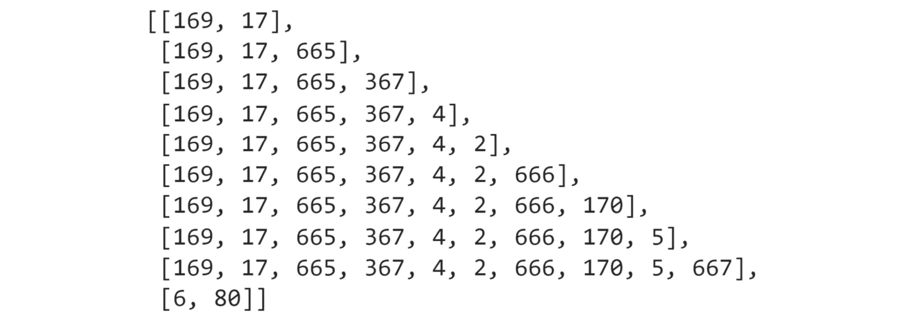图9.35: N元语法标记
- 填充序列并获得
predictors和target变量。使用pad_sequence填充序列并使其长度相等:def generate_padded_sequences(input_sequences): max_sequence_len = max([len(x) for x in input_sequences]) input_sequences = np.array\ (pad_sequences(input_sequences, \ maxlen=max_sequence_len, \ padding='pre')) predictors, label = input_sequences[:,:-1], \ input_sequences[:,-1] label = ku.to_categorical(label, num_classes=all_words) return predictors, label, max_sequence_len predictors, label, max_sequence_len = generate_padded_sequences\ (inp_sequences)
- Prepare your model for training. Add an input embedding layer with
model.add(Embedding). Add a hidden LSTM layer with100units and add a dropout of 10%. Then, add a dense layer with a softmax activation function. With thecompilemethod, configure your model for training, setting your loss function tocategorical_crossentropy, and use the Adam optimizer:def create_model(max_sequence_len, all_words): input_len = max_sequence_len - 1 model = Sequential() model.add(Embedding(all_words, 10, input_length=input_len)) model.add(LSTM(100)) model.add(Dropout(0.1)) model.add(Dense(all_words, activation='softmax')) model.compile(loss='categorical_crossentropy', \ optimizer='adam') return model model = create_model(max_sequence_len, all_words) model.summary()您应该得到以下输出:
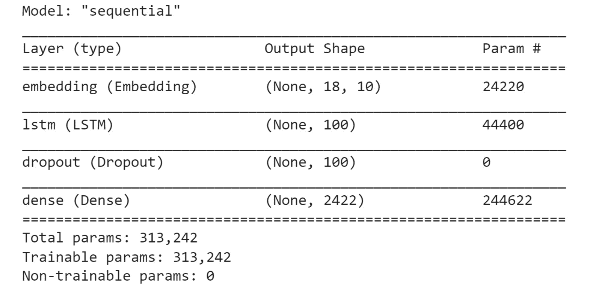图9.36:模型总结
- Fit your model with
model.fitand set it to run on100epochs. Setverboseequal to5:model.fit(predictors, label, epochs=100, verbose=5)
您应该得到以下输出:
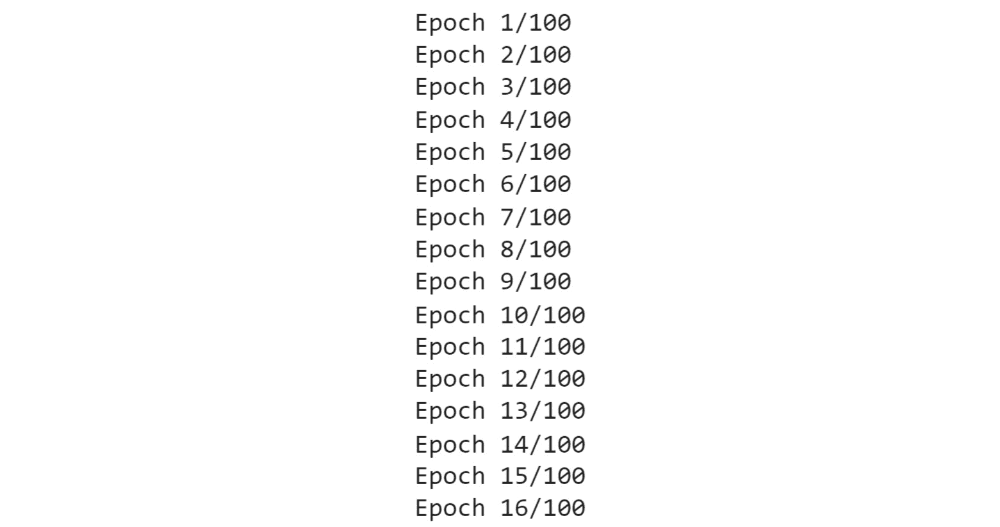图9.37:训练模型
- 编写一个函数，该函数将接收输入文本、模型和要预测的下一个单词的数量。该功能将准备输入文本，以供模型预测下一个单词:
def generate_text(seed_text, next_words, \ model, max_sequence_len): for _ in range(next_words): token_list = tokenizer.texts_to_sequences\ ([seed_text])[0] token_list = pad_sequences([token_list], \ maxlen=max_sequence_len-1,\ padding='pre') predicted = model.predict_classes(token_list, verbose=0) output_word = "" for word,index in tokenizer.word_index.items(): if index == predicted: output_word = word break seed_text += " "+output_word return seed_text.title()
- Output some of your generated text with the
printfunction. Add your own words for the model to use and generate from. For example, inthe hottest new, the integer5is the number of words output by the model:print (generate_text("the hottest new", 5, model,\ max_sequence_len)) print (generate_text("the stock market", 4, model,\ max_sequence_len)) print (generate_text("russia wants to", 3, model,\ max_sequence_len)) print (generate_text("french citizen", 4, model,\ max_sequence_len)) print (generate_text("the one thing", 15, model,\ max_sequence_len)) print (generate_text("the coronavirus", 5, model,\ max_sequence_len))您应该得到以下输出:
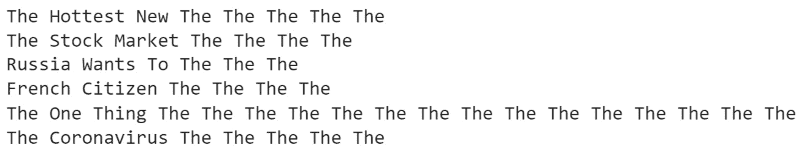
图9.38:生成的文本
在这个结果中，您可以看到您的模型为每个句子生成的文本。
在这个练习中，你已经成功地预测了一些新闻标题。不足为奇的是，有些可能不太令人印象深刻，但有些还不算太差。
现在，您已经掌握了关于RNNs的所有基本知识，尝试通过执行下一个活动来测试自己。
活动9.02:构建预测推文情感的RNN
tweets.csv数据集包含一个与航空公司相关的推文列表。每条推文都被分为积极、消极或中性情绪。
你的任务是为公司分析一份推文样本。你的目标是建立一个RNN模型，能够预测每条推文的情绪:积极或消极。
注意
你可以在这里找到tweets.csv:https://packt.link/dVUd2。
执行以下步骤来完成本练习。
- 导入必要的包。
- 准备数据(合并
Date和Time列，将其命名为datetime，对数据进行排序，并填充缺失值)。 - 准备文本数据(标记单词并添加填充)。
- 将数据集分为训练集和测试集，分别包含前10，000条推文和其余推文。
- 定义并训练一个RNN模型，该模型由两个不同层的LSTM组成，分别具有
50和100单元，后面是20%的下降和ReLU作为激活函数。 - Make predictions on the testing set with the trained model.
您应该得到以下输出:
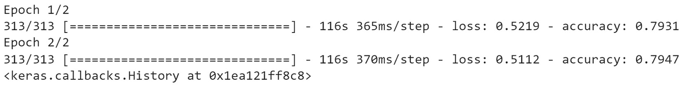
图9.39:活动9.02的预期产出
注意
此活动的解决方案可通过此链接找到。
总结
在这一章中，你探索了顺序数据的不同递归模型。您了解了每个连续的数据点都依赖于先前的数据点序列，例如自然语言文本。您还了解了为什么必须使用允许模型使用数据序列的模型，并按顺序生成下一个输出。
本章介绍了可以对序列数据进行预测的RNN模型。您观察到了rnn可以自我循环的方式，这允许模型的输出反馈到输入中。您回顾了使用这些模型所面临的挑战类型，例如渐变的消失和爆炸，以及如何解决它们。
在下一章中，您将学习如何在模型中使用自定义张量流组件，包括损失函数和层。